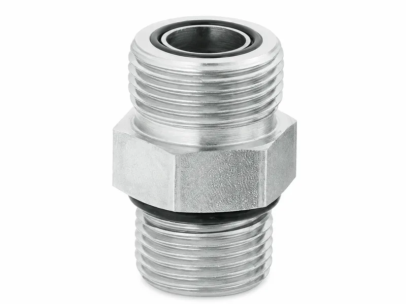
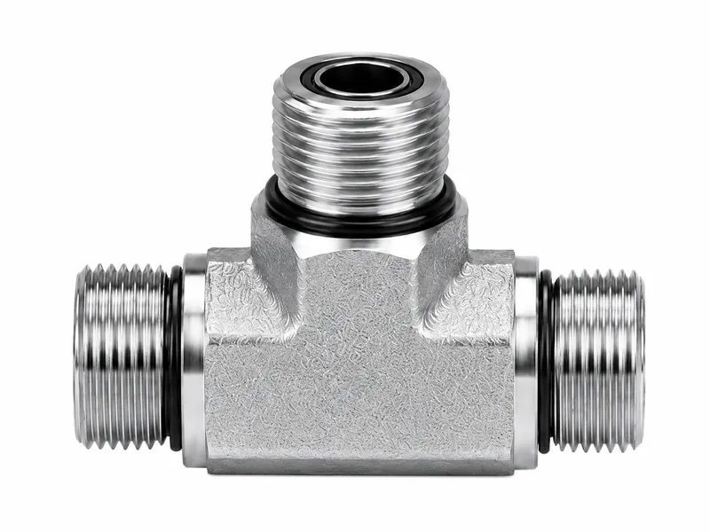
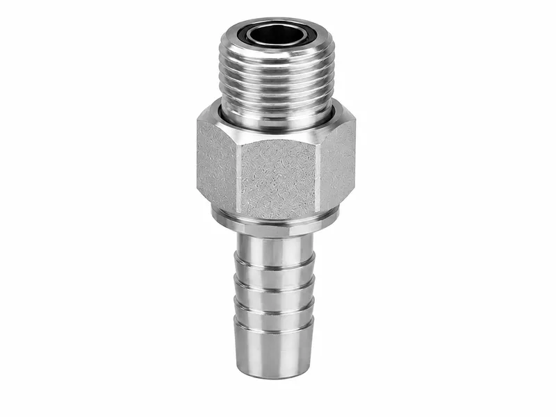
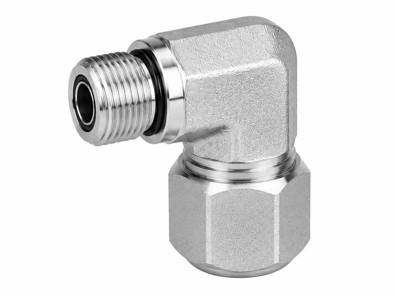

Hydraulic Fittings





ORFS hydraulic fittings are designed for high-pressure hydraulic systems that require clean, stable and leak-resistant connections. The O-ring face seal structure places the sealing element on the flat face of the fitting, helping reduce leakage caused by vibration, pressure fluctuation and repeated assembly. These fittings are widely used in mobile machinery, hydraulic power units, oil cylinders and industrial fluid power pipelines where reliable sealing performance and long service life are important.
| Product Type | ORFS hydraulic fittings and O-ring face seal adapters |
| Thread Standard | SAE J1453 ORFS style, with ISO 8434-3 reference available |
| Connection Options | straight adapter, elbow, tee, bulkhead union and female swivel fitting |
| Sealing Method | flat face sealing with NBR or FKM O-ring seated in the face groove |
| Material Options | carbon steel for standard supply; stainless steel available on request |
| Surface Finish | trivalent zinc plating, zinc nickel plating or stainless polished finish |
| Size Range | common hydraulic sizes from 1/4 inch to 2 inch, with custom sizes available |
| Working Pressure | suitable for medium and high-pressure hydraulic circuits, depending on size |
| Manufacturing Method | precision CNC machining, thread inspection and sealing face control |
| Customization | available according to drawings, samples, material requirements or surface finish needs |
The O-ring face seal helps reduce leakage in demanding hydraulic pipe connections.
Machined grooves keep the O-ring seated correctly during assembly and service.
Precision UNF threads support smooth tightening and dependable connection alignment.
The flat face seal design limits dependence on thread sealing and helps protect sealing surfaces.
Protective surface finishing helps fittings resist rust during storage and normal equipment use.
Straight, elbow, tee and bulkhead forms can be machined to suit different hydraulic layouts.
Forged or machined hex bodies provide stable wrench contact during installation and maintenance.
Compact geometry helps save space around manifolds, hose routes and equipment frames.
Face seal construction helps maintain sealing performance where hydraulic lines experience vibration.
Repeatable machining supports batch replacement and OEM assembly requirements.
The separated O-ring face seal helps reduce oil seepage and repeated repair work.
Thread, body shape and finish choices can be matched to the hydraulic system design.
Choose ORFS fittings when the hydraulic system requires stronger leakage control than ordinary tapered or metal-to-metal threaded connections.
For equipment exposed to vibration, pressure shock or frequent maintenance, the face seal structure can provide a more stable sealing solution.
Select carbon steel with trivalent zinc plating for general industrial use, and stainless steel for corrosive or outdoor environments.
Always confirm thread size, tube size, O-ring material and pressure rating before placing an order.
When replacing older fittings, compare the sealing face structure carefully to avoid mixing ORFS with JIC, BSP or metric thread types.
For custom hydraulic equipment, provide drawings or samples so that dimensions, tolerances and surface finish can be matched accurately.
Common ORFS hydraulic fittings include straight adapters for in-line hose or tube runs, 90-degree elbows for directional changes in compact equipment, tee fittings for branch circuits, bulkhead unions for passing through panels or brackets, and female swivel fittings for easier assembly in service locations.
For OEM hydraulic equipment and maintenance replacement, custom CNC-machined ORFS adapters can be produced to match drawing dimensions, connection combinations and installation space. Different structures are selected according to hydraulic pipeline routing, tube connection requirements, compact equipment layouts and replacement needs during field maintenance.
O-ring face seal fittings use a flat sealing face with the O-ring seated in a machined groove on the face, rather than relying on the thread itself as the primary sealing point. SAE J1453 ORFS fittings and ISO 8434-3 references are commonly used when engineers need to identify the thread form, port style and sealing structure.
Because the seal is compressed between two flat faces, the connection can help reduce leakage risk in high-pressure hydraulic systems. This structure is especially useful on equipment exposed to vibration, pressure fluctuation or repeated assembly, where thread-only sealing or metal-to-metal sealing may be less stable.
Material selection for ORFS hydraulic fittings should match the working environment and the fluid system requirements. Carbon steel is often used for general hydraulic machinery, while stainless steel can be considered where corrosion resistance or outdoor exposure is a higher priority.
Suitable surface finish options may include trivalent zinc plating for standard corrosion protection, zinc nickel plating for more demanding environments, and polished stainless steel finish when stainless components are specified. The final choice should consider corrosion resistance, pressure requirements, assembly conditions and the application environment.
Before purchasing ORFS hydraulic fittings, confirm the thread standard, tube size, working pressure, O-ring material, sealing face condition, installation space and required connection type. These details help avoid mismatched components and support reliable assembly in hydraulic pipelines and equipment frames.
Buyers should also distinguish ORFS from JIC, BSP, NPT and metric fittings, because similar outside dimensions do not always mean the same sealing method. Checking drawings, samples or existing part markings before ordering is especially important when sourcing custom hydraulic fittings or replacing fittings on older equipment.
Wei Xing Machinery can support custom hydraulic fittings based on customer drawings, physical samples, material requirements and surface treatment needs. Custom ORFS adapters can be designed around specific thread combinations, tube sizes, wrench flats and installation constraints for OEM hydraulic equipment applications.
Manufacturing control focuses on CNC machined hydraulic adapters, thread inspection, sealing face control and consistent dimensional matching. These steps help the finished ORFS components fit the intended hydraulic system while meeting the practical requirements of assembly, maintenance and replacement.
Can these ORFS fittings be customized according to drawings?
Yes. Wei Xing Machinery can manufacture ORFS Hydraulic Fittings and related CNC components according to drawings, samples, material requirements and surface finish needs.
What should be confirmed for the O-ring face seal?
Please confirm the required O-ring face seal, size, working pressure, material grade and application environment before ordering.
What materials are available?
Common options include carbon steel, stainless steel, aluminum, brass or ductile iron depending on the product type and working environment.
What surface treatments can be supplied?
Available finishes may include trivalent zinc plating, zinc nickel plating, black oxide, polishing or other customer-specified treatments.
Tell us your requirements and we'll provide a detailed quote within 24 hours.